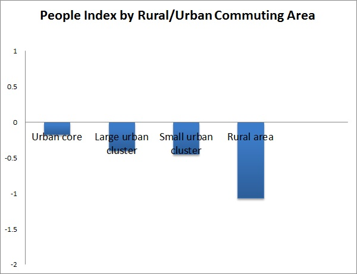
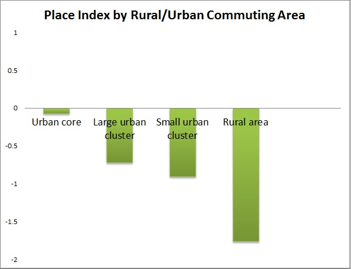
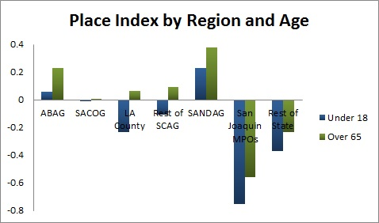

Equity Analysis
Patterns of Regional Opportunity: Spatial, Racial, Age, and Gender Disparities
The Regional Opportunity Index (ROI) is designed to provide an easy and intuitive tool for identifying populations and areas in greatest need of investment to thrive. The ROI integrates key indicators across a range of important issues—including education, economy, housing, mobility and the environment, and civic life—into a comprehensive measure of opportunity. We have developed separate ROI indices for both people and place, helping to identify factors associated with the demographic characteristics of people, and factors associated with places in which they live. In examining these patterns across the entire state, some interesting overall patterns of disparity in opportunity emerge1.
Rural-Urban Dynamics2:
Overall, for both people and place, urban core areas of the state have the highest levels of opportunity, which is not surprising because these areas contain the bulk of the state’s population so have a large influence on the statewide average to which they are being compared. The level of opportunity declines as the size of the communities decreases. The lowest levels of opportunity, as measured by our indices, are in truly rural parts of the region—those places with no settlement larger than 2,500 and only small amounts of commuting to small towns or larger urban center—reflecting a paucity of both individual characteristics that contribute to high levels people, and a dearth of local place-based resources.


Racial Disparities vary by sub-region
In trying to understand disparities in opportunity by different racial groups, we decided to look at how patterns differ across the state. For this analysis, we divided the state into regions based on metropolitan planning organization boundaries. ABAG refers to the nine-county region that constitutes the Association of Bay Area Governments. SACOG , the Sacramento Area Council of Governments, is comprised of six counties. SCAG is the Southern California Association of Governments. Los Angeles County belongs to SCAG, but because of its large size, we treat it as a separate entity. SANDAG is the San Diego Association of Governments and includes only San Diego County. Though not covered by a single MPO, we group eight central San Joaquin counties together. The counties not in any one of the preceding groups comprise the final group, which we refer to as the rest of the state3
In looking at the Index of People Opportunity, it is clear that across all racial groups, opportunity levels are significantly lower in the San Joaquin region and the mostly rural counties in the rest of the state. It is also clear that in all regions the non-Hispanic White population has higher levels of opportunity than any other racial group. The African-American population has the lowest level of opportunity, with Latinos not far behind. Both groups score below the state average in every region. African-Americans have very low levels of opportunity in the San Joaquin MPOs and the rest of the state, while Latinos experience the least opportunity in the San Joaquin MPOs and Los Angeles County. For the non-Hispanic White and Asian population, those living in the ABAG and SACOG regions have the highest opportunity scores.
Looking at the Place Opportunity Index provides some clues to help explain these racial differences in the People Opportunity Index. Here, the indices can be interpreted as the average opportunity score of the places where people of each racial group live. The patterns track quite closely to the patterns of the measures of the people themselves, indicating close overall connection between the relative opportunities a neighborhood provides and the relative opportunity people are able to achieve. It suggests, for example, that at least one reason why African-Americans and Latinos living in the San Joaquin region and the rest of the state are doing so much worse than in other regions is because the particular neighborhoods they are living in in the San Joaquin Valley and the rest of the state have fewer opportunities than those neighborhoods in the ABAG, SACOG, or SANDAG in which they live. It is notable that place-based opportunities in San Joaquin MPOs and the rest of the state are below the state average for every ethnic group. Opportunity levels are highest in SANDAG, and approach the state mean for African Americans and Latinos living in this region.
Disparities by gender and age are less
While the opportunities indices show quite large differences in the opportunities available to different racial groups, and analysis of disparities by gender and age show substantially less variation across regions. There is still a quite clear pattern of fewer opportunities in the San Joaquin Valley, but Los Angeles County also scores low on the People index, while the Rest of the State is below average in terms of place-based opportunities. The differences between men and women, however, are generally quite minimal. The one exception to this, however, is in the rest of the state, where men have what appear to be substantially lower levels of opportunity, and are living in places with substantially lower opportunities as well. This is likely due to the structure of employment opportunities in rural and agricultural parts of the state.
It is also valuable to look at opportunities for youth, and for elderly populations, since they tend to be the most vulnerable populations. Again, there are similar patterns across sub-regions, with those people and places in the San Joaquin Valley having substantially fewer opportunities than those in ABAG and SANDAG in particular. For the over 65 population, ABAG and SANDAG offer the highest level of people and place opportunities. The under 18 population shows the highest people opportunity in ABAG, but below average opportunity in SANDAG. This would make sense if people have retired to this area, having achieved their higher levels of opportunity elsewhere and are thus less hurt by the lower opportunities available in their local areas. For young people, levels of opportunity in Los Angeles County and the San Joaquin Valley are particularly low and worrisome, suggesting a significant need for investing in opportunities for youth in this sub-region of the state.

1 To compare levels of opportunity across different groups and regions, we calculated population-weighted tract means, which were summed and divided by the total subgroup population. We determined the relative performance of the subgroup by comparing the population-weighted subgroup mean to the overall state mean, using a statistical metric called the z-score. The z-score is a measure of how far the subgroup mean is from the state mean. To calculate the z-score, we subtracted the state mean from the population-weighted subgroup mean and divided by the standard deviation of the state mean.
2 To examine the differences in opportunity by levels of urbanization, we use the Rural-Urban Commuting Area (RUCA) Codes developed by the U.S. Department of Agriculture’s Economic Research Services using 2010 Census data, to classify all census tracts into one of four different categories:
- Urban Core: This includes metropolitan area core tracts, along with surrounding tracts with high degrees of commuting into the core urbanized areas (RUCA Codes 1-3). This corresponds to all large cities in our area, along with some surrounding area.
- Large urban cluster: This includes urban areas of 10,000 to 49,999 population, with surrounding tracts that have high proportions of commuting to those urban areas (RUCA Codes 4-6). This corresponds to smaller towns such as Avenal or Sanger.
- Small urban cluster: This includes small towns with population between 2,500 and 9,999, and surrounding areas with populations that commute there (RUCA Codes 7-9).
- Rural areas: These are truly rural areas with small populations and low or no commute to any of the other areas. (RUCA code 10).
3The counties in each MPO or group are: ABAG – Alameda, Contra Costa, Marin, Napa, San Francisco, San Mateo, Santa Clara, Solano, Sonoma; SACOG – El Dorado, Placer, Sacramento, Sutter, Yolo, Yuba; SCAG – Imperial, Orange, Riverside, San Bernardino, Ventura; SANDAG – San Diego; San Joaquin MPOs – Fresno, Kern, Kings, Mariposa, Merced, San Joaquin, Stanislaus, Tulare; Rest of state – Alpine, Amador, Butte, Calaveras, Colusa, Del Norte, Glenn, Humboldt, Inyo, Lake, Lassen, Madera, Mendocino, Modoc, Mono, Monterey, Nevada, Plumas, San Benito, San Luis Obispo, Santa Barbara, Santa Cruz, Shasta, Sierra, Siskiyou, Tehama, Trinity, Tuolumne. Los Angeles is part of SCAG but is analyzed separately due to its size.